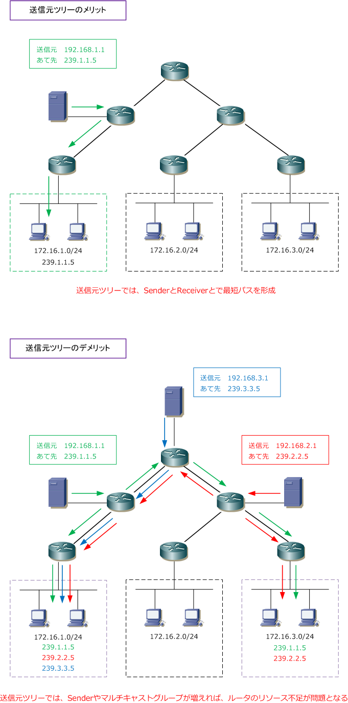
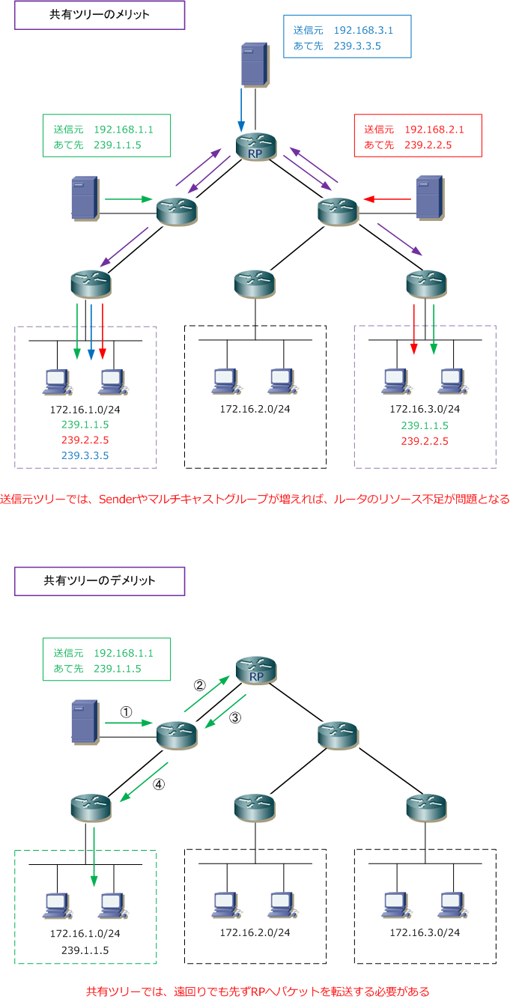

Multicast Distribution Tree - Source Tree / Shared Tree
ディストリビューションツリーの種類
ディストリビューションツリーには、送信元ツリーと共有ツリーの2種類があります。
| ツリーの種類 | 説明 |
|---|---|
| 送信元ツリー | Sender（送信者）ごとに、個別のディストリビューションツリーを作成 |
| 共有ツリー | 特定のルータ（RP）を中心に、複数のSenderで共通したディストリビューションツリーを作成 |
送信元ツリー（Source Tree）
送信元ツリーでは、Sender（マルチキャスト送信者）ごとに個別のディストリビューションツリーを作成する ことから、SenderとReceiverを結ぶ最適パスが形成されることからトラフィック転送の遅延を抑えられます。 しかし、各マルチキャストルータはSenderごとのツリーのパス情報を保持することから、数多くのSenderと マルチキャストグループが存在したり、Receiverが散在する場合は、ルータのリソース消費が問題になります。

送信元ツリーは最短パスを利用することから SPT（Shortest Path Tree）と言われます。送信元ツリーでは 送信元の「S」、マルチキャストグループの「G」をとって、SPTを（S,G）形式で表記すると、上図の場合、 （192.168.1.1, 239.1.1.5）（192.168.2.1, 239.2.2.5）（192.168.3.1, 239.3.3.5）のSPTをルータ上で 保持していることになります。
共有ツリー（Shared Tree）
共有ツリーでは、RP（Rendezvous Point）と呼ばれる特定のルータをを中心に、複数のSenderで共通した ディストリビューションツリーを作成します。共有ツリーは、RPを中心に形成されていくただ1つのツリー。 先ず、SenderはマルチキャストパケットをRPに送信します。次に、RPから共有ツリーに従ってReceiverへ 送信されます。なお、SenderとRPの間にReceiverがいる場合、RPを経由せずにReceiverへ直接送信します。
共有ツリーのメリットは、ただ1つの共有ツリー情報を保持するだけでなく、ルータの負荷が少ない点です。 また、多くのSenderがいる場合やReceiverが散在する場合でも、共有ツリーでは複数のSenderで共通した ディストリビューションツリーを作成するため、下図の通り、ツリーが少なくスッキリとします。
共有ツリーのデメリットは、RPの配置場所によりSenderとReceiverを結ぶパスが最短パスにならない点や RPの配置場所がSenderから離れている場合、マルチキャストパケットの配送に遅延が発生する可能性がある 点です。下図の動作の通り、SenderはRPへ向かって先ずマルチキャストパケットを転送しています。

共有ツリーでは、全ての送信元が共通の１つのツリーを使用することから（ *, G ）形式で表示されます。 上図の場合は（*, 239.1.1.5）（*, 239.2.2.5）（*, 239.3.3.5）と表記されます。送信元が any になる ことから「 * 」の表記が使用されます。
マルチキャストパケットを転送する際に「送信元ツリー」を使用するのか「共有ツリー」を使用するのかは、 ルータで設定するマルチキャストルーティングプロトコルのモード（大きく以下の2種類ある）に依存します。
| 動作モード | 説明 |
|---|---|
| マルチキャストルーティングプロトコル - Denseモード | 送信元ツリーを使用 |
| マルチキャストルーティングプロトコル - Sparseモード | 送信元ツリーと共有ツリーを組み合わせて使用 |